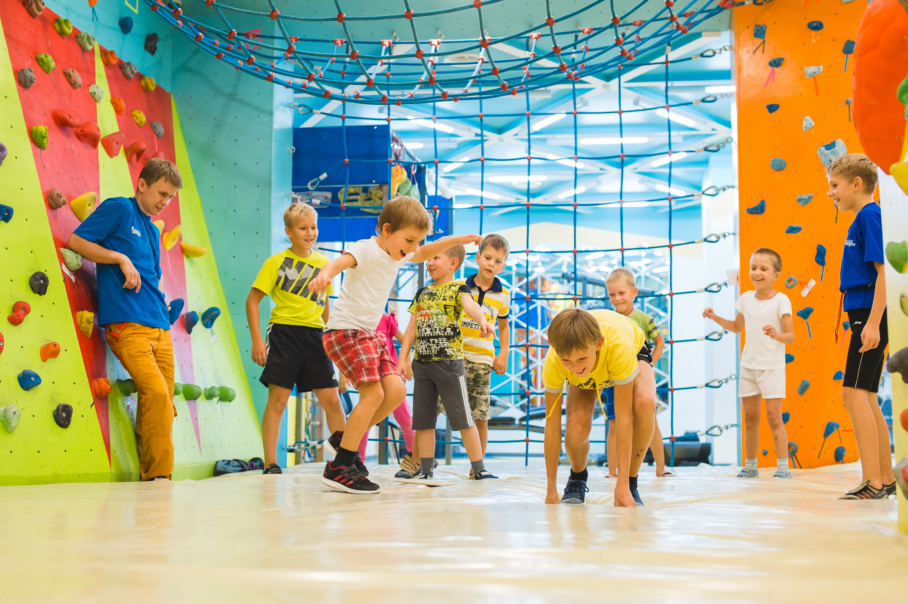
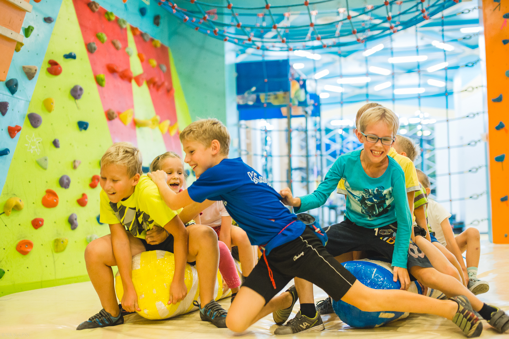

»Каньон» — отличный вариант для проведения праздника. Двухчасовая программа проходит в виде игры, похожей на «Форт Боярд». Участники делятся на две команды и выполняют задания, за каждое из которых получают ключ к сундуку с сокровищами. Задания игры, конечно, связаны со скалолазанием. Например, на одном из этапов вас могут попросить залезть наверх и забросить в ведро, закреплённое где-то под потолком, небольшой шарик. Призы предоставляют родители. Также они могут организовать для ребят праздничный стол.
Устраивая день рождения своего ребенка вы получаете:
По такому же принципу можно провести и взрослый день рождения и даже корпоратив. Программа, конечно, будет адаптирована под взрослых. Одежда для такого праздника должна быть удобная: спортивные брюки, футболка, кроссовки или скальники, которые можно взять в аренду в самом«Каньоне».

«Каньон» — это замечательное место для проведения спортивного пр
Стоимость проведения мероприятия на скалодроме «Каньон» — 6 000 рублей.
4 причины провести праздник на скалодроме «Каньон»:

Все это – скалодром «Каньон». Скалодром «Каньон» — больше, чем фитнес! Для детей от 7 лет!